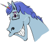

Nous avons commencé ce projet depuis le mois de janvier. Au début, nous savions quel type de jeu nous allions faire mais nous n'avions pas ou peu d'idée de gameplay pour le jeu. Après en avoir discuté, nous avons pris plusieurs décisions au niveau des ennemis, du personnage joué par le joueur, etc ... Au début, nous avons commencé par l'essentiel : prendre en main les logiciels que nous allions utiliser pour ce projet. Une fois ceci fait, il était temps de commencer sérieusement le projet : en premier nous nous sommes concentrés sur le mode créatif du jeu. Pour notre première soutenance de projet nous voulions un mode créatif entièrement fonctionnel et au moins un premier niveau de fait. Ainsi, il a fallu implémenter un système de sauvegarde pour pouvoir créer ses propres niveaux en créatif et les garder pour les tester ou les modifier plus tard. Il nous fallait aussi la caméra du jeu, le joueur, au moins un ennemi et une case de début et de fin de niveau. Pour le design du joueur nous avons choisi de le représenter par une boule :

Quant au partenaire de Bouly, nous avons choisi une licorne, Rial (parce Rial aide Bouly, donc c'est les tutos de Rial, notez le jeu de mots)
En ce qui concerne le choix de la caméra, nous avons choisi une caméra avec vue de dessus du niveau. Il est possible de la faire pivoter, ce qui peut rendre le gameplay plus agréable dans certaines situations.
Enfin, pour le premier ennemi que nous avons ajouté nous avons choisi la tour : c'est l'ennemi le plus basique et le plus basique à implémenter. Vinrent ensuite les différents menus et interfaces du jeu : le menu principal, le HUD ... Une fois tout ceci fait, nous avons dû franchir une première étape de débuggage ! Ajouter des choses c'est bien beau, mais il faut que le jeu soit jouable, ce qui veut dire que nous devons avoir le moins de bugs possible.
Vint ensuite la première grosse épreuve de ce projet : la soutenance ! Et malgré tout notre travail nous avions du retard. En effet, le mode créatif n'était pas entièrement fonctionnel : la case de fin du niveau ne marchait pas encore très bien ... Mais heureusement, cette petite difficulté ne nous a pas démotivés ! Nous sommes repartis travailler de plus belle sur notre projet pour affronter la deuxième soutenance, un peu plus d'un mois plus tard. Pour cela, nous avons commencé par rattraper notre retard, c'est à dire avoir un mode créatif entièrement fonctionnel avec, cette fois, un case de fin de niveau qui marche réellement. Nous nous sommes penchés aussi sur la création des niveaux puisque nous devions avoir des niveaux à proposer au joueur. Une fois ceci fait, nous avons alors commencé à travailler sur de nouveaux ennemis, la création d'un tutoriel, l'ajout du choix de langue (anglais ou français) ainsi que des niveaux supplémentaires et des nouveaux éléments de décors. C'est ainsi que nous arrivions, à la deuxième soutenance, armés jusqu'aux dents avec toutes ces nouveautés : les cristaux, les sentinelles, les vitres, les boutons, un nouveau design de leurres, un mode créatif entièrement fonctionnel et cinq niveaux implémentés avec un tutoriel ainsi que ce site web, bien évidemment !
Et enfin, nous voilà arrivés à la soutenance finale ! Depuis la deuxième soutenance nous avons apportés beaucoup d'améliorations, corrigé des bugs et ajouté des nouveaux éléments de jeu. Parmi eux nous retrouvons le portail, la mine ou le passage, avec leur description sur la page du site dédiée au listing des ennemis et des éléments de décors (voir cette page : Le jeu). Des sons ont également été ajoutés ainsi qu'un menu de fin de niveau, un système de verrouillage des niveaux (pour accéder à un niveau il faut finir le niveau précédent), et il est maintenant possible de paramétrer les touches de jeu pour plus de confort ! Enfin, un certain nombre d'améliorations graphiques ont été faites, notamment sur le HUD. Un mini tutoriel a été fait pour chaque objet du jeu afin de bien comprendre son utilité.
Nous ne possédons qu'un seul son pour le moment, le "Boop" qui se trouve sur cette vidéo : Boop